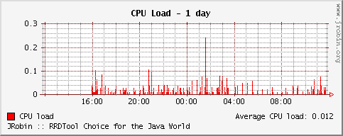

Working example
The following application monitors the CPU load of a workstation (or any other SNMP capable device) and stores its data in a single RRD file (named load.rrd). At the same time this application creates four different graphs (load-daily.png, load-weekly.png, load-monthly.png and load-yearly.png) showing the CPU load for the last day, week, month and year. Once started it runs until the end of the world and recreates all graphs every five minutes.
RRD file and graphs will be created under jrobin-demo subdirectory of your home directory:
- On Linux: ~/jrobin-demo
- On Windows: C:\Documents and Settings\Administrator\jrobin-demo
Since Java has no API to read CPU load directly, it has to get it from somewhere else. This application obtains CPU load from a SNMP agent running on the same machine (localhost). Without this agent the demo will genereate only a huge number of IOExceptions. If you don't know how to install and run a SNMP agent, download the code and documentation from the NET-SNMP project. Be sure that the constants SNMP_HOST, SNMP_PORT and SNMP_COMMUNITY match the configuration of your running agent. Application assumes that the CPU load is available at OID enterprises.ucdavis.laTable.laEntry.laLoad.1 (1.3.6.1.4.1.2021.10.1.3.1). Adjust this OID if necessary by setting appropriate value for the SNMP_CPU_LOAD_OID constant.
The code is quite self-explanatory with many comments: it should demonstrate how easy it is to establish a bacis JRobin framework for complex everyday tasks. Put the following code in a file named CpuLoadMonitor.java:
import snmp.*;
import java.net.*;
import java.io.*;
import java.awt.*;
import java.util.Date;
import org.jrobin.core.*;
import org.jrobin.graph.*;
public class CpuLoadMonitor {
// SNMP access parameters
public static final String SNMP_HOST = "localhost";
public static final int SNMP_PORT = 161;
public static final String SNMP_COMMUNITY = "public";
// CPU Load OID: enterprises.ucdavis.laTable.laEntry.laLoad.1
public static final String SNMP_CPU_LOAD_OID = "1.3.6.1.4.1.2021.10.1.3.1";
// All files and graphs will be created in jrobin-demo subdirectory
// of your HOME directory.
//
// On Linux: ~/jrobin-demo
// On Windows: C:\Documents and Settings\Administrator\jrobin-demo
// RRD file path
public static final String RRD_FILE = "load.rrd";
// Image file paths
public static final String IMAGE_DAILY = "load-daily.png";
public static final String IMAGE_WEEKLY = "load-weekly.png";
public static final String IMAGE_MONTHLY = "load-monthly.png";
public static final String IMAGE_YEARLY = "load-yearly.png";
// SNMP sampling resolution
public static final int SNMP_RESOLUTION = 60; // seconds
// Graph will be recreated each 5 minutes (300 seconds)
public static final int GRAPH_RESOLUTION = 300; // seconds
// SNMP communicator object
SNMPv1CommunicationInterface comm;
// pool of open RRD files (we have just a single one, but who cares)
RrdDbPool rrdPool = RrdDbPool.getInstance();
public CpuLoadMonitor() throws IOException, RrdException {
createSnmpCommObject();
createRrdFileIfNecessary();
startSnmpThread();
startGraphingThread();
}
// creates SNMP communicator object
private void createSnmpCommObject() throws IOException {
InetAddress snmpHost = InetAddress.getByName(SNMP_HOST);
comm = new SNMPv1CommunicationInterface(0, snmpHost,
SNMP_COMMUNITY, SNMP_PORT);
}
// creates RRD file only if it does not exist
private void createRrdFileIfNecessary() throws RrdException, IOException {
String rrdPath = Util.getJRobinDemoPath(RRD_FILE);
File rrdFile = new File(rrdPath);
if(!rrdFile.exists()) {
// create RRD file since it does not exist
RrdDef rrdDef = new RrdDef(rrdPath, SNMP_RESOLUTION);
// single gauge datasource, named 'load'
rrdDef.addDatasource("load", "GAUGE", 5 * SNMP_RESOLUTION, 0, Double.NaN);
// several archives
rrdDef.addArchive("AVERAGE", 0.5, 1, 4000);
rrdDef.addArchive("AVERAGE", 0.5, 6, 4000);
rrdDef.addArchive("AVERAGE", 0.5, 24, 4000);
rrdDef.addArchive("AVERAGE", 0.5, 288, 4000);
// create RRD file in the pool
RrdDb rrdDb = rrdPool.requestRrdDb(rrdDef);
rrdPool.release(rrdDb);
}
}
// creates and starts SNMP thread
private void startSnmpThread() {
// create thread
Runnable snmpThread = new Runnable() {
public void run() {
// until the end of the world
for(;;) {
try {
// read SNMP value
SNMPVarBindList varList = comm.getMIBEntry(SNMP_CPU_LOAD_OID);
SNMPSequence pair = (SNMPSequence)(varList.getSNMPObjectAt(0));
// get CPU load as a string
String cpuLoadString = pair.getSNMPObjectAt(1).toString().trim();
// convert CPU load to double
double cpuLoad = Double.parseDouble(cpuLoadString);
// request RRD database reference from the pool
RrdDb rrdDb = rrdPool.requestRrdDb(
Util.getJRobinDemoPath(RRD_FILE));
// create sample with the current timestamp
Sample sample = rrdDb.createSample();
// set value for load datasource
sample.setValue("load", cpuLoad);
// update database
sample.update();
// release RRD database reference
rrdPool.release(rrdDb);
// wait for a while
Thread.sleep(SNMP_RESOLUTION * 1000L);
} catch (IOException e) {
reportException(e);
} catch (SNMPBadValueException e) {
reportException(e);
} catch (SNMPGetException e) {
reportException(e);
} catch (RrdException e) {
reportException(e);
} catch (InterruptedException e) {
reportException(e);
}
}
}
};
// start SNMP thread
new Thread(snmpThread).start();
}
private void startGraphingThread() throws RrdException {
// create common part of graph definition
// time span will be set later
final RrdGraphDef graphDef = new RrdGraphDef();
graphDef.datasource("load",
Util.getJRobinDemoPath(RRD_FILE), "load", "AVERAGE");
graphDef.area("load", Color.RED, "CPU load@L");
graphDef.gprint("load", "AVERAGE", "Average CPU load: @3@r");
graphDef.comment("JRobin :: RRDTool Choice for the Java World@l");
// create graphing thread
Runnable graphThread = new Runnable() {
public void run() {
// until the end of the world
for(;;) {
// ending timestamp is the current timestamp
// starting timestamp will be adjusted for each graph
long startTime, endTime = Util.getTime();
RrdGraph rrdGraph;
try {
// daily graph
startTime = endTime - 86400;
graphDef.setTimePeriod(startTime, endTime);
graphDef.setTitle("CPU Load - 1 day");
rrdGraph = new RrdGraph(graphDef, true); // uses pool
rrdGraph.saveAsPNG(Util.getJRobinDemoPath(IMAGE_DAILY));
// weekly graph
startTime = endTime - 86400 * 7;
graphDef.setTimePeriod(startTime, endTime);
graphDef.setTitle("CPU Load - 1 week");
rrdGraph = new RrdGraph(graphDef, true); // uses pool
rrdGraph.saveAsPNG(Util.getJRobinDemoPath(IMAGE_WEEKLY));
// monthly graph
startTime = endTime - 86400 * 31;
graphDef.setTimePeriod(startTime, endTime);
graphDef.setTitle("CPU Load - 1 month");
rrdGraph = new RrdGraph(graphDef, true); // uses pool
rrdGraph.saveAsPNG(Util.getJRobinDemoPath(IMAGE_MONTHLY));
// yearly graph
startTime = endTime - 86400 * 366;
graphDef.setTimePeriod(startTime, endTime);
graphDef.setTitle("CPU Load - 1 year");
rrdGraph = new RrdGraph(graphDef, true); // uses pool
rrdGraph.saveAsPNG(Util.getJRobinDemoPath(IMAGE_YEARLY));
// sleep for a while
Thread.sleep(GRAPH_RESOLUTION * 1000L);
} catch (RrdException e) {
reportException(e);
} catch (IOException e) {
reportException(e);
} catch (InterruptedException e) {
reportException(e);
}
}
}
};
// start graphing thread
new Thread(graphThread).start();
}
// reports exception by printing it on the stderr device
private static void reportException(Exception e) {
System.err.println("ERROR [" + new Date() + "]: " + e);
}
public static void main(String[] args) throws IOException, RrdException {
new CpuLoadMonitor();
}
}
To compile this code, you have to specify two external libraries in the classpath:
- jrobin-{version}.jar (core JRobin library)
- snmp-1.3.jar (SNMP library)
Both libraries are provided with the latest JRobin distribution. Compile the code by executing the following command from the command line:
javac -classpath jrobin-{version}.jar:snmp-1.3.jar CpuLoadMonitor.java
To run the application, execute:
nohup java \
-Djava.awt.headless=true \
-cp .:jrobin-{version}.jar:snmp-1.3.jar \
CpuLoadMonitor &
The second line (-D switch) is necessary only if you run this application without X-windows up and running (common situation on many newtwork servers).
Once application is started, give it some time to produce some meaningful graphs (half an hour should be fair enough). If everything runs as expected, the daily graph should look like this one:

That Linux box is obviously idle most of the time :)
Copyright © 2003, 2004 Sasa Markovic & Arne Vandamme. All Rights Reserved.